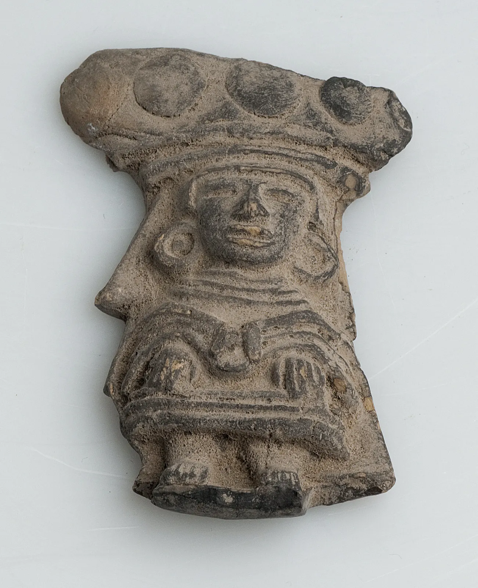
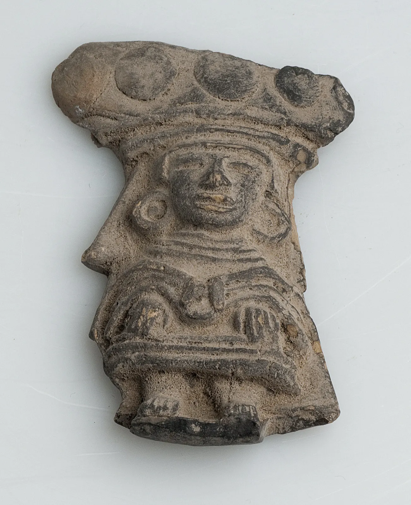

Metadata
Description
A short description about the object
Afbeelding van een Iyoba (koningin-moeder) met een halskraag van 37 opeengestapelde
kralensnoeren die wordt omgeven door een drie cm. brede sokkelplint. Het
hoofd is bedekt met een konische voorovergebogen muts van netvormig verwerkte
kralen. Behalve de kraag, ogen en oren is het gehele oppervlak gepunteerd.
Verspreid over de kop zitten 37 rondjes in reliëf. De bek wordt omgeven
door een gedeeltelijk opengewerkte kraag.
Provided by Nationaal Museum van Wereldculturen and Wereldmuseum
Material
What kind of material is used. Click on the i of the material to lean
more.
Wood
Iron
Provided by Nationaal Museum van Wereldculturen and Wereldmuseum
Dimensions
What is the height, width and depth.
No Dimensions available
Date Made
When was the object made. Could be a exact or a date range.
19e eeuw
Provided by Nationaal Museum van Wereldculturen and Wereldmuseum
Types
Description needed
No Types available
Techniques
Description needed
No Techniques available
Creators
Description needed
No Creators available
Traditional Knowledge Labels
The TK Labels support the inclusion of local protocols for access and
use to cultural heritage that is digitally circulating outside community
contexts.
-
 AttributionElihtasik (How it is done).
AttributionElihtasik (How it is done). -
 OutreachEkehkimkewey (Educational).
OutreachEkehkimkewey (Educational). -
 
